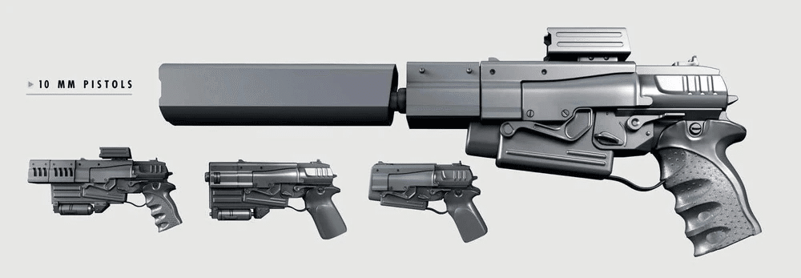
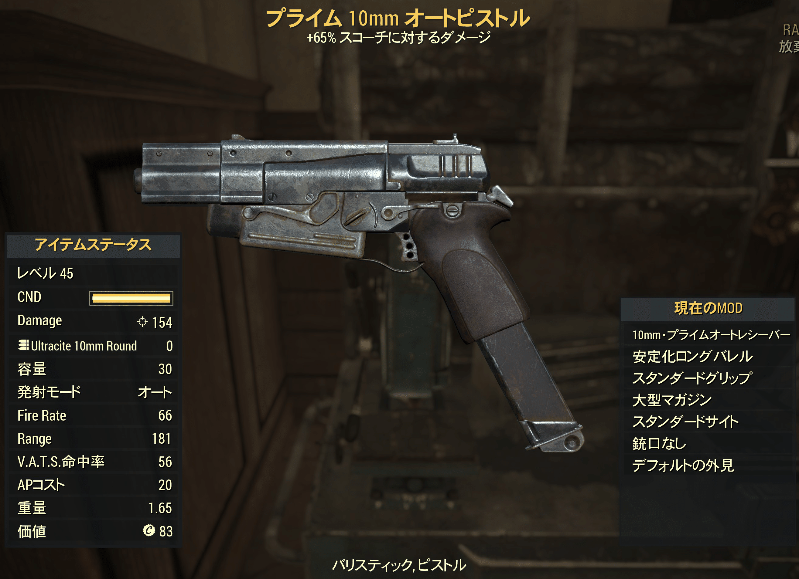

10mmピストル
Falloutシリーズ全作品に登場する、最も象徴的な小型火器の一つです。
戦前の軍や警察、政府機関で標準採用されていたため、アパラチアからウェイストランドまで全土で広く普及しています。
多くの主人公（Vault居住者）が最初に手にする「頼れる相棒」となることが多い武器です。
全体的な特徴
弾薬: 10mm弾を使用。
長所: 弾薬が入手しやすい、耐久性が高い、扱いやすい。
短所: ゲーム後半の敵に対しては威力不足になりがち。
役割: 初盤の主力武器から、中盤以降のサイドアーム（サブ武器）として機能します。
作品ごとのデザインと性能の違い
シリーズによってモデルやデザインが大きく2つに分類されます。
1. クラシック・スタイル (Fallout 1, 2)
モデル名: コルト6520
見た目: 角ばったリボルバーのような銃身を持ちながら、弾倉（マガジン）を使う独特なデザイン。
性能: 初期の頼れる武器ですが、ゲームが進むと火力不足になります。
2. 旧・現代スタイル (Fallout 3, New Vegas)
モデル名: N99 10mmピストル
見た目: 全体的に四角くブロック状で、非常に武骨なデザイン。右側面に排莢口があります。
Fallout 3: Vault 101脱出時に手に入る最初の銃。修理用パーツが集めやすく、非常に便利です。
New Vegas: アイアンサイトが覗けるようになりました。サプレッサーや拡張マガジンなどのMODを取り付けることで、ステルス武器としても活躍します。
3. 新・現代スタイル (Fallout 4, 76)
モデル名: 明記なし（単に10mmピストルと呼ばれる）
見た目: 3/NV時代よりも丸みを帯び、レトロフューチャー感が強調された大型のデザイン。
最大の特徴（カスタマイズ性）: 過去作と比べ、改造の幅が劇的に広がりました。
オートマチック化: フルオート射撃が可能になり、DPSを大幅に強化できます。
スナイパー/ステルス仕様: スコープやロングバレル、サプレッサーを装着し、隠密行動用の主力武器にできます。
有用性: 改造次第で終盤まで使い続けることが可能です。
特に「爆発」などのレジェンダリー効果が付くと強力な武器に化けます。
有名なユニーク・バリエーション

通常の10mmピストルとは異なる、特別な名前付きの銃も存在します。
シドニーの10mm "ウルトラ" SMG (Fallout 3):
ピストルベースのサブマシンガン。
装弾数が多く強力。ウェザード・10mmピストル (New Vegas):
DLC特典。
最初から少し改造されており、耐久度が高い。デリバラー (Fallout 4):
実銃のワルサーPPKに似た、小型で特殊な10mmピストル。
V.A.T.S.命中率とAP効率が非常に高く、隠密プレイ最強格の武器。パーフェクトストーム (Fallout 76):
敵を炎上させる効果を持つ10mmサブマシンガン
（※ピストル枠に近い扱いとして記載）。

最初はただの初期装備ですが、特に近年の作品（4や76）では改造によって驚くべきポテンシャルを発揮するため、ニッチな愛用者が居る武器でもあります。
この記事は、10mm Pistol（Fallout Wiki at Fandom）を翻訳・編集して作成しています。
クリエイティブ・コモンズ 表示-継承ライセンス (CC BY-SA 3.0) の下で提供されています。
コミュニティ維持のため、寄付を受け付けております。
> COMMENTS